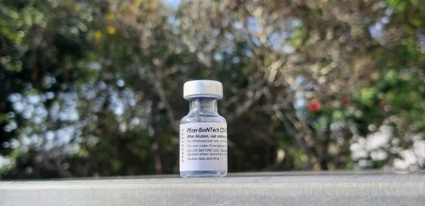
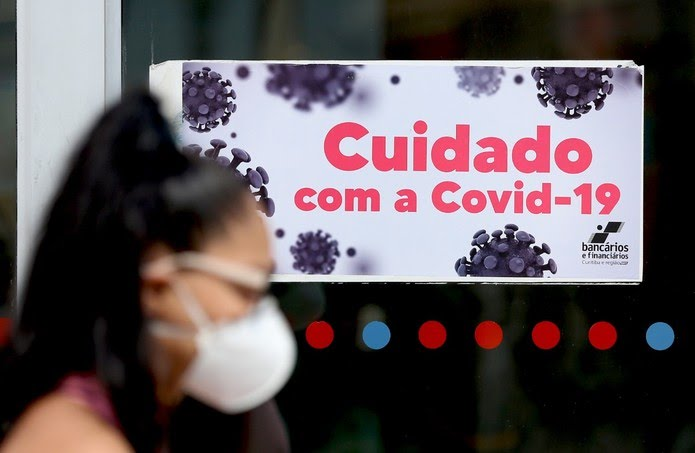
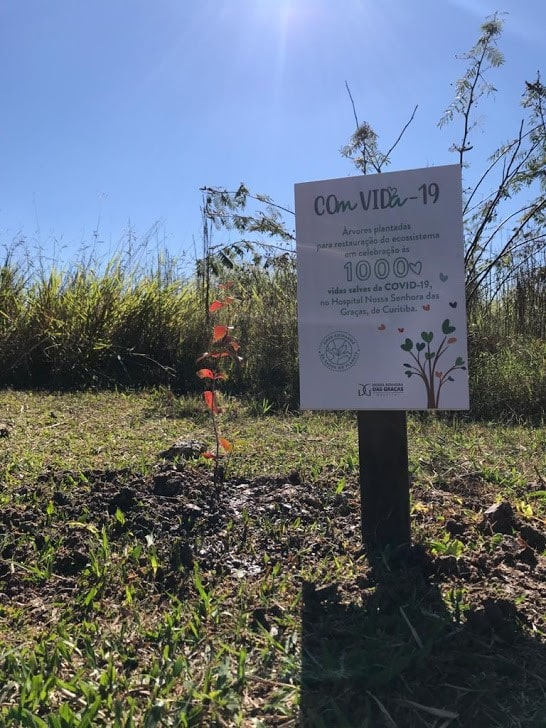
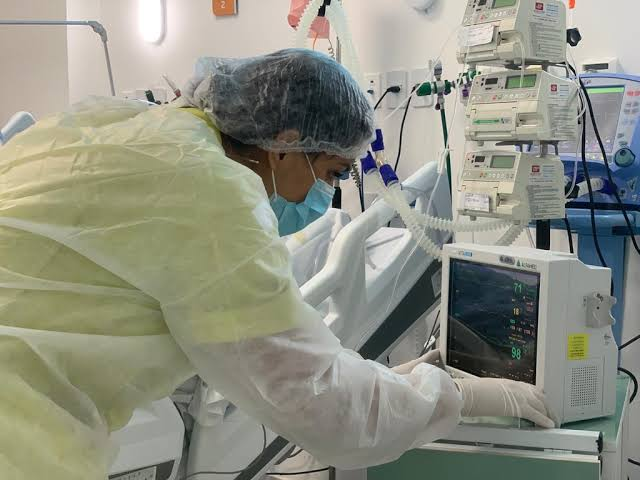

A Secretaria Estadual da Saúde (Sesa) enviou 34.710 vacinas contra a Covid-19 para a Prefeitura de Curitiba nesta sexta-feira (18). Os imunizantes fazem parte da 25ª pauta de distribuição do Ministério da Saúde, recebida pela manhã.
São 28.380 doses da vacina Pfizer, destinadas a trabalhadores da educação do ensino básico, ensino superior, assistência social e população de 40 a 59 anos. Também foram encaminhadas 6.330 doses de CoronaVac, que devem ser direcionados às gestantes e mulheres que deram a luz.
Nesta sexta-feira, o secretário de saúde do Paraná, Beto Preto, afirmou que Curitiba não foi prejudicada pela distribuição de doses de vacinas contra a Covid-19. A controvérsia começou na quarta-feira (16), quando a Prefeitura de Curitiba pediu que a cidade recebesse mais vacinas porque tinha recebido menos doses do que deveria.
Ponta Grossa, nos Campos Gerais do Paraná, abriu agendamento para que pessoas entre 49 e 59 anos se vacinem contra a Covid-19. O sistema está disponível nesta sexta-feira (18).
O público receberá o imunizante no sábado (19), das 9h às 17h, na Estação Arte, no Ginásio Oscar Pereira e também no drive-thru do Centro de Eventos.
O Paraná teve 10.751 novos casos e 495 novas mortes por Covid-19 incluídas no boletim divulgado pela Secretaria de Estado da Saúde (Sesa), nesta sexta-feira (18).
Com isso, o estado chegou a 1.175.032. O número de óbitos pela Covid-19 no Paraná atingiu 29.508, conforme a secretaria.
saiba mais.. Ponta Grossa, nos Campos Gerais do Paraná, abriu agendamento para que pessoas entre 50 e 59 anos se vacinem contra a Covid-19. O sistema está disponível nesta sexta-feira (18).
O público receberá o imunizante no sábado (19), das 9h às 17h, na Estação Arte, no Ginásio Oscar Pereira e também no drive-thru do Centro de Eventos.
Também no sábado, serão vacinados os profissionais de ensino superior entre 33 e 49 anos. O agendamento também é obrigatório para o grupo.
No Paraná, as aulas presenciais na rede pública estadual de ensino estão sendo retomadas aos poucos desde o início deste ano letivo. Das 2.100 escolas, 873 já iniciaram o modelo híbrido (parte dos alunos em sala e parte acompanhando as aulas pela internet), incluindo 122 colégios abertos nesta segunda-feira (21), em 36 municípios.
Atualmente, contudo, parte das escolas que já puderam adotar o formato híbrido tiveram que recuar: a Secretaria de Estado da Educação (Seed) informou nesta segunda-feira (21) que atualmente há 12 escolas fechadas e 52 turmas com aulas presenciais suspensas devido a casos de Covid-19.
Segundo a Seed, na última semana, foram registrados 249 casos positivos de infecção pelo coronavírus. Destes, 232 são decorrentes de contaminações fora do ambiente escolar, enquanto 17 estão em investigação, segundo a pasta.
Além disso,outras 165 escolas estão fechadas na esteira de decretos locais, que ainda não liberaram as aulas presenciais devido aos números da pandemia. Ou seja, das 873 escolas que já receberam autorização para reabrir, 696 estão efetivamente tendo aulas presenciais hoje.
Na semana passada, o Hospital Nossa Senhora das Graças, em Curitiba, atingiu a marca de mil altas hospitalares de pacientes que internaram para tratamento da Covid-19.
E para celebrar esse marco, a instituição homenageou cada paciente que venceu a luta contra o vírus, com um gesto simbólico: mil mudas de árvores nativas foram plantadas, pelos próprios profissionais, representando os pacientes recuperados. Entre as árvores nativas que foram plantadas estão mudas de araucária, ipê, araçá e gabiroba.
De acordo com o hospital, essa foi a forma para ressignificar esse momento, que faz parte de um projeto recente do hospital, o ComVida, que como o próprio nome já diz, busca ver o lado positivo dos acontecimentos mesmo em tempos tão difíceis.“É muito gratificante para nós termos participado da recuperação de tantos pacientes. Muito mais do que um número, são vidas, que estiveram em nossos cuidados e obtiveram uma nova chance. E já que o simbolismo mais conhecido da árvore é de representar vida, surgiu essa iniciativa, idealizada com muito carinho”, diz a Diretora Geral do HNSG, Ir. Maria de Fátima Sobral.
Cedida pela Sanepar, o Memorial do Rio Iguaçu foi uma das áreas escolhidas para o plantio das mudas. “Buscamos um local da cidade que pudéssemos contribuir com a restauração do ecossistema, que é o tema mundial do meio ambiente desse ano. Dessa forma, com esse ato simbólico de celebração da vida, esperamos também contribuir com a revitalização dessa área”, diz o engenheiro do HNSG, Alexandre Gutierrez.
A ação simbólica também contou com a presença de três pacientes recuperados da Covid-19 a convite do hospital. Evandro Conrado é um desses pacientes. Ficou 31 dias internado no HNSG, sendo 20 intubado. Junto a esposa e sua filha, ele compareceu ao local para plantar a sua própria árvore. “Depois que você passa pela doença, as coisas simples se tornam muito maiores, é uma outra visão de vida”, diz Evandro.
Após quase um mês, a taxa de ocupação dos leitos de UTI exclusivos para Covid-19, em Curitiba, voltou a ficar abaixo de 100%. Os dados são do portal da transparência da
No último sábado (19), 97% dos 548 leitos exclusivos de UTI para Covid-19 estavam ocupados na capital paranaense. Conforme a pasta, 18 leitos estavam livres. Já a taxa de ocupação dos leitos de enfermaria estava em 77%.
Em 26 de maio, alguns dias antes da capital paranaense voltar para a bandeira vermelha, com maiores restrições para conter o avanço da doença, todos os 525 leitos estavam ocupados. Naquele dia, a taxa de ocupação dos 726 leitos clínicos para pacientes do novo coronavírus estava em 96%.
Nesse tempo, a taxa de ocupação das UTIs chegou a atingir 104% durante vários dias seguidos. Mesmo assim, a capital paranaense voltou para a bandeira laranja, com flexibilização dos serviços no dia 08 de junho.
Na ocasião, a taxa de ocupação dos leitos seguia acima de 100%, mas a Secretaria Municipal de Saúde informou que os índices, como taxa de transmissão da doença, por exemplo, haviam baixado do limite de risco máximo e, por este motivo, a medida estava sendo tomada.
Até o último sábado, 231.703 moradores de Curitiba testaram positivo para a covid-19 nesse período de pandemia, dos quais 217.731 liberados do isolamento e sem sintomas da doença. Além disso, foram registradas 5.898 mortes na cidade provocadas pela doença.